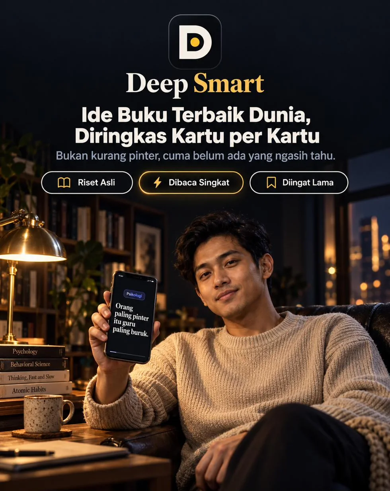
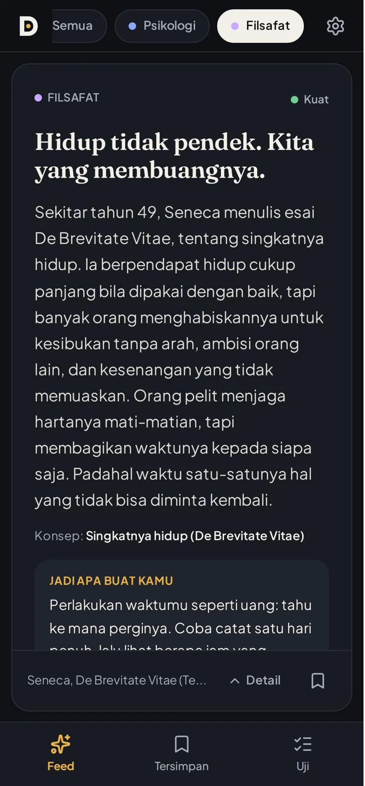
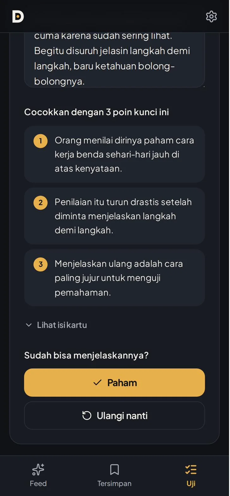
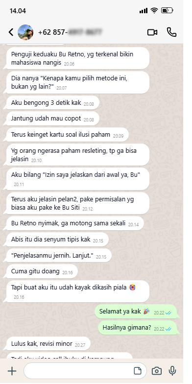
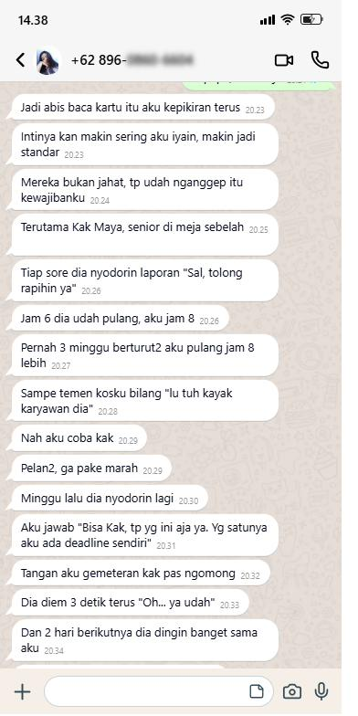
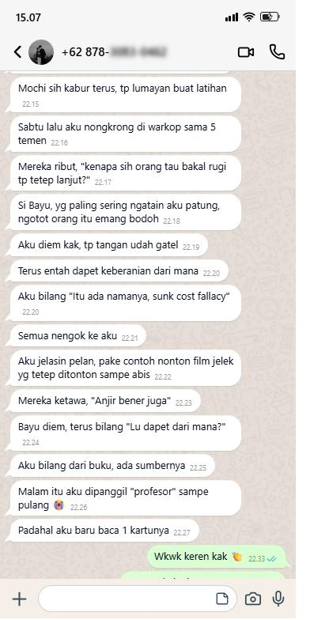

Untuk kamu yang hobi scroll

Deep Smart adalah app di HP yang scroll-nya kayak TikTok, tapi tiap geseran berisi satu ide dari buku, riset, dan pemikir beneran. Psikologi, filsafat, produktivitas, dan bisnis, diringkas jadi kartu yang selesai dibaca kurang dari semenit, lengkap dengan sumbernya.
Dibuka dari browser HP, tablet, atau laptop. Tanpa install, tanpa akun.
“Tadi aku nonton apa, ya?”
Jam satu malam. Sudah satu setengah jam scroll, HP mulai panas. Kamu coba ingat satu hal yang tadi kamu tonton, dan gak ada satu pun yang bisa kamu ceritakan ulang.
“Oh, itu ada namanya, ya?”
Temanmu menjelaskan satu konsep di tongkrongan atau rapat, rapi dan gampang dimengerti. Semua orang nengok ke dia. Kamu cuma ngangguk, dan diam-diam ngerasa ketinggalan.
“Nanti aku baca.”
Buku yang kamu beli tahun lalu masih di meja. Pembatasnya di halaman 43. Tiap lihat sampulnya kamu janji mulai minggu depan, dan minggu depan gak pernah datang.
Tiga adegan ini kelihatan beda. Akarnya sama, dan bukan karena kamu kurang pinter atau malas belajar.
Feed yang kamu buka tiap hari dirancang supaya kamu terus geser, bukan supaya kamu ingat. Satu video belum selesai dicerna, video berikutnya sudah main. Buku sebaliknya: isinya bagus, tapi butuh berjam-jam dan kepala yang segar, dua hal yang jarang ada di sela kerja atau kuliah.
Deep Smart mengambil cara geser yang bikin kamu betah, lalu mengisi tiap geserannya dengan ide yang layak diingat.
Hook satu kalimat, penjelasan beberapa kalimat, lalu satu kalimat "jadi apa buat kamu". Selesai, geser.
Nama konsep, judul buku atau riset, penulis, dan tahunnya. Ditambah label Kuat, Sedang, atau Diperdebatkan, supaya kamu tahu seberapa kokoh buktinya.
Tulis ulang pakai kata-katamu sendiri, lalu cocokkan dengan 3 poin kuncinya. Kalau sudah bisa kamu jelaskan, berarti idenya sudah jadi milikmu.
Ini salah satu kartunya. Coba ketuk.
Kartu ini persis seperti yang muncul di dalam app.
Scroll yang sama. Isi yang nempel.
Bukan disuruh baca lebih banyak. Cukup satu ide yang benar-benar kamu pahami.
Kodenya ada di Panduan Akses di emailmu. Cukup sekali, setelah itu tersimpan di perangkatmu.
Psikologi, filsafat, produktivitas, atau bisnis. Tiap topik punya urutan acaknya sendiri.
Satu kartu satu layar. Setelah 10 kartu ada rekap singkat, mau lanjut atau cukup dulu, kamu yang pilih.
Feed Acak
Kartu muncul acak dan gak berulang sampai semuanya pernah tampil. Paling banyak dua kartu beruntun dari topik yang sama, jadi feed-mu gak monoton. Di laptop, sumber dan poin kunci selalu terbuka di samping kartu.

Uji Jelasin Ulang
Pilih kartu yang sudah kamu simpan, tulis penjelasanmu sendiri, lalu cocokkan dengan 3 poin kuncinya. Tandai Paham, atau Ulangi nanti. Tanpa nilai dan tanpa AI, kamu sendiri yang menilai.

Tersimpan
Tekan simpan, kartu masuk Tersimpan. Cari lagi kapan saja lewat kata di hook, isi, konsep, atau sumbernya.
Ide terbaru
Ide terbaru terus ditambahkan ke dalam app, langsung muncul di feed-mu dengan label Baru, tanpa biaya tambahan.
Pilih satu, atau biarkan semuanya bercampur.
Menyajikan ide dari buku, riset, dan pemikir satu per satu dalam urutan acak, lengkap dengan sumber dan label buktinya, menyimpan ide yang kamu pilih, dan menguji apakah kamu bisa menjelaskannya ulang.
Pengganti membaca buku utuh, kursus, atau AI yang bisa ditanya. Deep Smart tidak menjanjikan kamu jadi pintar atau IQ naik. Yang diberikan adalah ide yang jelas sumbernya, dalam takaran yang bisa kamu cerna.
| TikTok atau Reels | Beli buku | App ringkasan berlangganan | Deep Smart | |
|---|---|---|---|---|
| Waktu per ide | Cepat, tapi besok lupa | Berjam-jam per buku | Sekitar 15 menit per buku | Satu kartu, kurang dari semenit |
| Sumbernya | Jarang disebut | Jelas | Jelas | Di tiap kartu, plus label bukti |
| Titik berhenti | Gak ada ujungnya | Akhir bab | Akhir ringkasan | Rekap tiap 10 kartu |
| Menguji paham | Tidak ada | Tidak ada | Tergantung app | Uji Jelasin Ulang |
| Bahasa | Campur | Tergantung buku | Umumnya Inggris | Indonesia |
| Biaya | Gratis, dibayar pakai waktu | Per judul | Langganan, umumnya dolar | Rp127.000, sekali bayar |
Geser untuk melihat cerita lainnya. Nomor disensor untuk menjaga privasi.



App ringkasan buku dan feed ide dari luar negeri umumnya berbahasa Inggris dan berlangganan dolar, totalnya bisa lebih dari Rp1 juta per tahun. Deep Smart berbahasa Indonesia, dibayar sekali dalam rupiah.
Sekali bayar, tanpa tagihan bulanan.
Panduan Akses berisi kode masuk dikirim ke email yang kamu pakai saat order.
Bisa pakai QRIS, transfer bank, atau e-wallet.
Klik link biru yang diawali drive.google.com. Bukan tombol "Unduh Produk". Kalau belum ada di kotak masuk, cek folder Spam atau Promosi.
Buka deepsmart.netlify.app, masukkan kode, lalu mulai dari kartu pertamamu.
Tenang, kamu cuma salah klik. Balik ke email yang sama, lalu:
Kamu sudah coba menyimpan video, beli buku, sampai janji ke diri sendiri buat mulai baca. Yang belum pernah dicoba: scroll yang tiap geserannya meninggalkan sesuatu di kepala.
Kartu pertamamu, kurang dari semenit.
Dibuka dari browser HP, tablet, atau laptop. Tanpa install, tanpa akun.